건축산업기사 (2015-05-31 기출문제)
1과목: 건축계획
1. 상점 건축의 판매부분에 속하지 않는 것은?
- 관리공간
- 통로공간
- 도입공간
- 상품전시공간
(정답률: 75%)

2. 사무소 건축에서 기준층 충고의 결정 요소와 관계없는 것은?
- 공사비
- 채광조건
- 사용목적
- 엘리베이터 설치 대수
(정답률: 87%)
3. 다음의 백화점 에스컬레이터 배치 유형 중 점유면적이 크고, 고객의 시야가 가장 넓은 것은?
- 교차식 배치
- 직렬식 배치
- 병렬단속식 배치
- 병렬연속식 배치
(정답률: 79%)
4. 리빙 키친(Living Kitchen)의 채택 효과로 가장 알맞은 것은?
- 장래 증축의 용이
- 거실 규모의 확대
- 부엌의 독립성 강화
- 주부 가사노동의 간편화
(정답률: 83%)
5. 다음 설명에 알맞은 연립주택의 유형은?
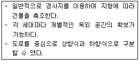
- 타운 하우스
- 로우 하우스
- 테라스 하우스
- 파티오 하우스
(정답률: 86%)
6. 주거공간을 주행동에 따라 개인공간, 사회공간, (가사)노동공간 등으로 구분할 경우, 다음 중 (가사)노동공간에 속하는 것은?
- 현관
- 서재
- 화장실
- 다용도실
(정답률: 81%)
7. 단독주택의 거실 계획에 관한 설명으로 옳지 않은 것은?
- 거실에서 문이 열린 침실의 내부가 보이지 않도록 한다.
- 거실과 정원 사이에 테라스를 둘 경우 거실의 연장 효과가 있다.
- 가족의 단란을 도모하기 쉽도록 각 실로 둘러 싸인 홀 형식으로 계획한다.
- 가능한 동측이나 남측에 배치하여 일조 및 채광을 충분히 확보할 수 있도록 한다.
(정답률: 68%)
8. 다음의 설명에 알맞은 사무소 건축의 코어 형식은?
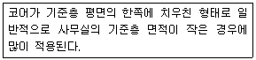
- 편심코어형
- 중심코어형
- 양측코어형
- 분리코어형
(정답률: 86%)
9. 무창 방적 공장에 관한 설명으로 옳지 않은 것은?
- 외부 환경의 영향을 많이 받는다.
- 온도와 습도 조정에 비용이 적게 든다.
- 방위와 무관하게 배치 계획할 수 있다.
- 실내 소음이 실외로 잘 배출되지 않는다.
(정답률: 78%)
10. 상점건축계획에 관한 설명으로 옳지 않은 것은?
- 상점 안의 천장높이는 디스플레이와 시선을 고려하여 계획한다.
- 상점 바닥 면은 보도 면에서 자연스럽게 유도 될 수 있도록 계획한다.
- 조명방법은 기본조명, 상품조명, 환경조명 등 으로 구분하여 적용한다.
- 고객의 구매욕구를 높이기 위해 고객, 종업원, 상품의 동선을 서로 교차하게 계획한다.
(정답률: 87%)
11. 오피스 랜드스케이핑(office landscaping)에 관한 설명으로 옳지 않은 것은?
- 커뮤니케이션이 용이하고, 장애요인이 거의 없다.
- 배치는 의사전달과 작업흐름의 실제적 패턴에 기초를 둔다.
- 복도를 통해 각 실로 접근하므로 독립성과 쾌적성이 우수하다.
- 바닥을 카펫으로 깔고, 천장에 방음장치를 하는 등의 소음대책이 필요하다.
(정답률: 80%)
12. 단독주택의 각 실 계획에 관한 설명으로 옳지 않은 것은?
- 주택 현관의 크기 결정시 방문객의 예상 출입량까지 고려할 필요는 없다.
- 식당 및 부엌은 능률을 좋게 하고 옥외작업장 및 정원과 유기적으로 결합되게 한다.
- 계단은 안전상 경사, 폭, 난간 및 마감방법에 중점을 두고 의장적인 고려를 한다.
- 거실은 주거생활 전반의 복합적인 기능을 갖고 있으며 이에 대한 적합한 가구와 어느 정도 활동성을 고려한 계획이 되어야 한다.
(정답률: 78%)
13. 주택단지 안의 건축물에 설치하는 공동으로 사용하는 계단의 유효폭은 최소 얼마 이상이어야 하는가?
- 0.9m
- 1.0m
- 1.2m
- 1.5m
(정답률: 67%)
14. 아파트 건축의 평면형식에 관한 설명으로 옳지 않은 것은?
- 중복도형은 채광, 통풍 조건이 불리하다.
- 홀형은 통행이 양호하며 프라이버시가 좋다.
- 편복도형은 복도가 개방형이므로 각호의 채광 및 통풍이 양호하다,
- 계단실형은 통행부 면적 비율이 높으며 독신자 아파트에 주로 채용된다.
(정답률: 70%)
15. 아파트에 의무적으로 설치하여야 하는 장애인 등의 편의시설에 속하지 않는 것은?
- 장애인전용주차구역
- 장애인 등의 통행이 가능한 복도
- 장애인 등의 통행이 가능한 접근로
- 장애인 등의 출입이 가능한 출입구(문)
(정답률: 68%)
16. 학교운영방식에 관한 설명으로 옳지 않은 것은?
- 종합교실형은 초등학교 저학년에 대해 가장 권장할 만한 형이다.
- 플래툰형은 교사의 수와 적당한 시설이 없으면 실시가 곤란하다.
- 교과교실형에서는 일반교실이 각 학년에 하나씩 할당되고, 그 외에 특별교실을 가진다.
- 달톤형은 학급, 학생 구분을 없애고 학생들은 각자의 능력에 맞게 교과를 선택하는 방식이다.
(정답률: 71%)
17. 다종의 소량 생산이나 표준화가 어려운 경우에 채용되는 공장 레이아웃(lay out) 방식으로 알맞은 것은?
- 고정식 레이아웃
- 혼성식 레이아웃
- 공정중심 레이아웃
- 제품중심 레이아웃
(정답률: 76%)
18. 주거공간의 모듈계획(MC: Modular Coordination) 적용에 관한 설명으로 옳지 않은 것은?
- 설계 작업이 단순하고 간편해진다.
- 현상작업이 단순하고 공기를 단축시킬 수 있다.
- 건축재료의 대량생산이 용이하고 생산비를 절약할 수 있다.
- 사용자 개개인의 성격에 맞는 변화있는 공간 구성이 용이하다.
(정답률: 83%)
19. 상점의 쇼윈도우에 관한 설명으로 옳지 않은 것은?
- 쇼윈도우의 바닥 높이는 상품의 종류와 관계없이 낮게 할수록 좋다.
- 다층형의 쇼윈도우는 입체적˙시각적으로 일체감이 느껴지도록 계획한다.
- 쇼윈도우의 규모는 상품의 종류, 형상, 크기 및 상점의 종류, 전면길이, 대지조건에등에 따라 결정된다.
- 쇼윈도우 유리면의 반사방지를 위해 쇼윈도우의 내부 조도를 외부보다 높게 하는 방법을 사용할 수 있다.
(정답률: 81%)
20. 다음 설명에 알맞은 근린생활권은?
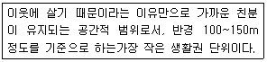
- 인보구
- 근린주구
- 근린분구
- 광역지구
(정답률: 84%)
2과목: 건축시공
21. 발주자를 대신하여 설계 및 시공에 필요한 기술과 경험을 바탕으로, 발주자의 의도에 적합하게 완성물을 인도하기 위하여 발주자(건축주), 설계자, 시공자 조정을 목적으로 하는 방식은?
- 턴키(Turn-Key)
- 공동도급(Jont Venture)
- CM(Construction Management)
- 파트너링(Partnering)
(정답률: 67%)
22. 알루미늄 및 그 합금에 관한 설명 중 틀린 것은?
- 녹슬기 쉽고 사용연한이 짧으며 콘크리트 등 알칼리에 매우 약하다.
- 용해 주조도는 좋으나 내화성이 약하다.
- 봉재, 판, 선 및 샤시, 창문, 문 등을 제작하는데 사용된다.
- 비중은 철의 약 1/3이고 고온에서 강도가 저하된다.
(정답률: 57%)
23. 콘크리트에 AE제를 사용하지 않아도 1~2%의 크고 부정형한 기포가 함유되는데 이 기포의 명칭은?
- 연행공기(Entrained Air)
- 겔공극
- 잠재공기(Entrapped Air)
- 모세관공극
(정답률: 60%)
24. 건축공사 재료 중 마루판으로 적당하지 않은 것은?
- 코펜하겐 리브(copenhagen rib)
- 플로어링 보드(flooring board)
- 파키트리 보드(parquetry board)
- 파키트리 블록(parquetry block)
(정답률: 70%)
25. 마루널에 이용되는 가장 적합한 쪽매는?
- 오늬쪽매
- 제혀쪽매
- 빗쪽매
- 맞댄쪽매
(정답률: 64%)
26. 시스템 거푸집의 종류로 잘못 짝지어진 것은?
- 무지주공법 – 페코빔(Pecco Beam)
- 바닥판공법 – W식 거푸집
- 벽체 전용 시스템 거푸집 – 갱폼(Gang Form)
- 벽체+바닥전용 시스템 거푸집 – 플라잉폼 (Flying Form)
(정답률: 57%)
27. 콘크리트 타설에 대한 설명으로 틀린 것은?
- 콘크리트의 자유낙하 높이는 콘크리트가 분리 되지 않는 범위로 한다.
- 보는 밑바닥에서 윗면까지 동시에 부어넣도록 하고 진행방향을 양단에서 중앙으로 부어넣는다.
- 기둥은 윗면까지 동시에 부어넣어 콜드 조인트가 생기지 않도록 한다.
- 벽은 콘크리트 주입구를 여러 곳에 설치하여 충분히 다지면서 수평으로 부어넣는다.
(정답률: 46%)
28. 목조 2층주택의 마루널과 반자널을 까는 경우 작업순서로 옳은 것은?
- 1층 마루바닥 → 1층 반자 → 2층 마루바닥 → 2층 반자
- 2층 마루바닥 → 2층 반자 → 1층 마루바닥 → 1층 반자
- 2층 반자 → 1층 반자 → 2층 마루바닥 → 1층 마루바닥
- 1층 마루바닥 → 2층 마루바닥 → 1층 반자 → 2층 반자
(정답률: 60%)
29. 콘크리트의 중성화 현상에 대한 대책으로 틀린 것은?
- 물시멘트 비를 작게 한다.
- 콘크리트를 충분히 다짐하고 습윤양생을 한다.
- 투기성이 큰 마감재를 사용한다.
- 철근의 피복두께를 확보한다.
(정답률: 47%)
30. 지하수위를 저하시킬 수 있는 배수공법에 해당되지 않는 것은?
- 디프웰 공법
- 웰 포인트 공법
- 집수정 공법
- 베노토 공법
(정답률: 61%)
31. 다음 중 지반개량 공법이 아닌 것은?
- 샌드컴팩션파일 공법
- 바이브로 플로테이션 공법
- 페이퍼드레인 공법
- 트렌치 컷 공법
(정답률: 71%)
32. 목재의 이음 및 맞춤에 관한 용어와 거리가 먼 것은?
- 주먹장
- 연귀
- 모접기
- 장부
(정답률: 57%)
33. 건축용으로 사용되는 다음 금속재 중 상호 접촉 시 가장 부식되기 쉬운 것은?
- 구리
- 알루미늄
- 철
- 아연
(정답률: 66%)
34. 콘크리트를 혼합할 때 염화마그네슘(MgCl2)을 혼합하는 이유는?
- 콘크리트의 비빔 조건을 좋게 하기 위함이다.
- 방수성을 증가하기 위함이다.
- 강도를 증가하기 위함이다.
- 얼지 않게 하기 위함이다.
(정답률: 83%)
35. 경량콘크리트(Light Weight Concrete)의 장점에 해당되지 않는 것은?
- 자중이 작아 건물 중량을 경감할 수 있다.
- 열전도율이 작고, 내화성과 방음효과가 크며, 홉음률도 보통 콘크리트보다 크다.
- 콘크리트의 운반이나 부어넣기의 노력을 절감할 수 있다.
- 동해에 대한 저항이 커 지하실 등에 적합하다.
(정답률: 61%)
36. 철근콘크리트의 염해를 억제하는 방법으로 옳은 것은?
- 콘크리트의 피복두께를 적절히 확보한다.
- 콘크리트 중의 염소이온을 크게 한다.
- 물시멘트비가 높은 콘크리트를 사용한다.
- 단위수량을 크게 한다.
(정답률: 63%)
37. 철근 콘크리트용 골재의 성질에 관한 설명 중 틀린 것은?
- 골재의 단위용 적질량은 입도가 클수록 크다.
- 골재의 공극율은 입도가 클수록 크다.
- 계량 방법과 함수율에 의한 중량의 변화는 입경이 작을수록 크다.
- 완전침수 또는 완전건조 상태의 모래에 있어서는 계량 방법에 의한 용적의 변화는 거의 없다.
(정답률: 53%)
38. 유리공사에서 특수유리와 사용장소를 짝지은 것 중 틀린 것은?
- 겹유리 - 방화창
- 프리즘유리 – 지하실 채광
- 자외선 투과 유리 - 병원
- 골판유리 – 지붕, 천장
(정답률: 54%)
39. Power shovel의 1시간당 추정 굴착 작업량을 다음 조건에 따라 구하면?
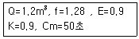
- 89.6m3/h
- 90.6m3/h
- 98.6m3/h
- 108.6m3/h
(정답률: 52%)
40. 타일공사 시 바탕처리에 대한 설명으로 틀린 것은?
- 타일을 붙이기 전에 바탕의 들뜸, 균열 등을 검사하여 불량 부분은 보수한다.
- 여름에 외장타일을 붙일 경우에는 바탕면에 물을 축이는 행위를 금한다.
- 흡수성이 있는 타일에는 제조업자의 시방에 따라 물을 축여 사용한다.
- 타일을 붙이기 전에 불순물을 제거하고, 청소한다.
(정답률: 73%)
3과목: 건축구조
41. 등분포하중을 받는 4변 고정 2방향 슬래브에서 모멘트량이 가장 크게 나타나는 곳은?
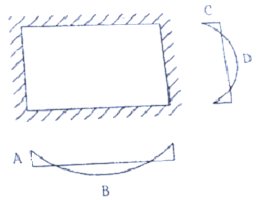
- A
- B
- C
- D
(정답률: 51%)
42. 아래 그림과 같은 트러스에서 AB부재 부재력의 크기는? (단, +는 인장, -는 압축임)
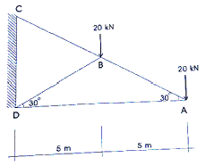
- +20 kN
- -20 kN
- +40 kN
- -40 kN
(정답률: 45%)
43. 다음 그림과 같은 단순보의 A~C, C~D, D~E, E~B 구간에서 발생되는 전단력값(절대값)이 아닌 것은?
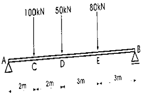
- 134 kN
- 96 kN
- 37 kN
- 16 kN
(정답률: 50%)
44. 지름 50mm, 길이가 3m 인 연강봉을 축방향으로 200kN의 인장력을 작용시켰을 때 길이가 1.6mm 늘어났다. 이 때 강봉의 탄성계수(E)는 약 얼마인가?
- 약 1.41×105MPa
- 약 1.91×105MPa
- 약 2.41×105MPa
- 약 2.91×105MPa
(정답률: 49%)
45. 단면 복부의 폭이 400mm, 양쪽 슬래브의 중심간 거리가 2000mm인 대칭 T형보의 유효 폭은? (단, 보의 경간은 4800mm, 슬래브 두께는 120mm임)
- 1000mm
- 1200mm
- 2000mm
- 2320mm
(정답률: 61%)
46. 다음 그림의 빗금친 마름모가 단면의 핵을 나타낸다고 할 때 FH/BC는?
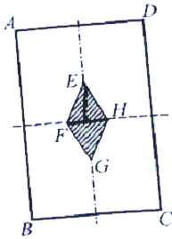
- 1/2
- 1/3
- 1/4
- 1/6
(정답률: 58%)
47. 철근 콘크리트 단철근 직사각형 보에서 폭 b=500mm, 유효깊이 d=750mm, 콘크리트 설계기준강도 fck=24MPa, 철근항복강도 fy=400MPa일 때 균형 철근비 Pb는?
- 0.018
- 0.020
- 0.026
- 0.030
(정답률: 51%)
48. 그림과 같은 구조물의 부정정 차수는?
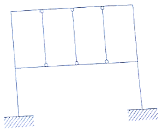
- 6차 부정정
- 7차 부정정
- 8차 부정정
- 9차 부정정
(정답률: 58%)
49. 철근콘크리트 슬래브의 내부경간에서의 정계수휨모멘트/정적계수휨모멘트(Mo)의 비율은?
- 0.25
- 0.35
- 0.45
- 0.65
(정답률: 44%)
50. 표준갈고리를 갖는 인장 이형철근의 기본정착 길이는 얼마인가?(단, KCI2012 적용, fy=400MPa, fck=24MPa, D25 철근의 공칭지름 25.4mm, 경량콘크리트계수와 철근도막계수는 1이다.)
- 485.4mm
- 497.7mm
- 518.4mm
- 529.8mm
(정답률: 52%)
51. 그림과 같은 도형의 X축에 대한 단면 2차 모멘트는? (단, G는 도형의 도심)
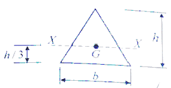
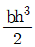
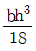
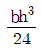
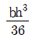
(정답률: 64%)
52. 그림과 같은 내민보의 A지점의 휨모멘트 값은?
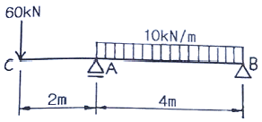
- -80 kN·m
- -120 kN·m
- -160 kN·m
- -200 kN·m
(정답률: 55%)
53. 다음 그림에서 직사각형 단면의 X축에 대한 단면 1차 모멘트가 Gx=72,000cm3일 경우 폭 b는 얼마인가?
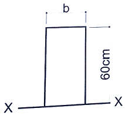
- 25 cm
- 30 cm
- 35 cm
- 40 cm
(정답률: 43%)
54. 장방형 단면의 철근콘크리트 기둥에서 띠철근의 주요 역할은?
- 철근과 콘크리트의 부착력 증가
- 콘크리트의 압축강도 증가
- 콘크리트 폭렬현상 방지
- 주근의 좌굴을 방지
(정답률: 74%)
55. 도심지에 건축물의 기초를 설치할 경우 인접대지 경계선 부근에서 인접한 기초가 문제가 될 수 있다. 이 때 사용할 수 있는 가장 적합한 기초는?
- 복합기초
- 독립기초
- 온통기초
- 줄기초
(정답률: 44%)
56. 강도설계법에서 인장측에 3042mm2, 압축측에 1014mm2의 철근이 배근되었을 때 압축응력 등가블럭의 깊이로 옳은 것은?(단, fck=21MPa, fy=400MPa, 보의폭 b=300mm 이다.)
- 125.7mm
- 151.5mm
- 227.7mm
- 303.1mm
(정답률: 46%)
57. 그림과 같은 휨모멘트가 생길 경우 보의 양단지점조건으로 옳은 것은?
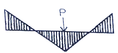
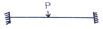
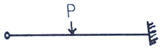
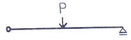
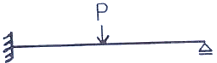
(정답률: 75%)
58. 콘크리트구조설계 시 사용하는 용어에 대한 설명으로 틀린 것은?
- 공칭강도 : 강도설계법의 규정과 가정에 따라 계산된 부재나 단면의 강도로 강도감소계수를 적용한 강도
- 콘크리트 설계기준강도 : 콘크리트 부재를 설계할 때 기준이 되는 콘크리트의 압축강도
- 계수하중 : 강도설계법으로 부재를 설계할 때 사용하중에 하중계수를 곱한 하중
- 소요강도 : 철근콘크리트 부재가 사용성과 안전성을 만족할 수 있도록 요구되는 단면의 단면력
(정답률: 42%)
59. 강도설계법으로 설계 시 고정하중에 의하여 5kN·m, 활하증에 의하여 10kN·m의 모멘트를 받는 단철근 직사각형보의 소요 모멘트 강도(M
- 18.3kN·m
- 20.3kN·m
- 22.0kN·m
- 24.3kN·m
(정답률: 54%)
60. 기초 및 지반에 관한 기술 중 틀린 것은?
- 철근콘크리트 기초에 배근되는 철근 배근량은 기초의 부동침하에 큰 영향을 미치지 않는다
- 지반 개량법 중에 하나인 강제 압밀탈수 공법은 점토질 지반에 적합한 개량법이다.
- 지내력 시험시 내압판이 크면 클수록 실제에 가까운 값을 얻을 수 있다.
- 블리딩이란 흙막이벽 공사 시 흙막이벽 뒷부분의 흙이 미끄러져 들어오는 현상을 의미한다.
(정답률: 57%)
4과목: 건축설비
61. 증기난방방식을 채용한 실의 손실열량이 25kW일 경우 필요한 방열면적은? (단, 표준상태이며, 표준방열량은 756W/m2 이다.)
- 29.8m2
- 33.1m2
- 47.6m2
- 55.6m2
(정답률: 54%)
62. 온수난방 배관에서 역환수방식(Reverse Return System)을 채택하는 가장 주된 이유는?
- 배관의 신축을 조정하기 위해
- 펌프의 양정을 작게 하기 위해
- 배관의 길이를 짧게 하기 위해
- 온수의 유량분배를 균일하게 하기 위해
(정답률: 75%)
63. 다음 중 증발에 따른 트랩의 봉수파괴를 방지하기 위한 방법으로 가장 적절한 것은?
- 헝겊조각 등을 제거한다.
- 급수보급장치를 설치한다.
- 배수구에 격자를 설치한다.
- 트랩 주변에 통기관을 설치한다.
(정답률: 44%)
64. 정화조에서 호기성(好氣性)균을 필요로 하는 곳은?
- 부패조
- 여과조
- 산화조
- 소독조
(정답률: 73%)
65. 태양 복사열이 벽체에 미치는 영향을 고려한 가상의 온도차를 무엇이라 하는가?
- 상당외기온도차
- 유효외기온도차
- 실효외기온도차
- 효과외기온도차
(정답률: 67%)
66. 통기배관에 관한 설명으로 옳지 않은 것은?
- 오물정화조의 통기관은 단독으로 한다.
- 통기관과 실내환기덕트는 서로 연결해서는 안된다.
- 통기수직관과 빗물수직관은 겸용으로 하는 것이 좋다.
- 신정통기관은 배수수직관의 상단을 연장하여 대기 중에 개구한다.
(정답률: 69%)
67. 지락전류를 영상변류기로 검출하는 전류동작형으로 지락전류가 미리 정해 놓은 값을 초과할 경우, 설정된 시간 내에 회로나 회로의 일부의 전원을 자동으로 차단하는 장치는?
- 단로스위치
- 절환스위치
- 누전차단기
- 과전류차단기
(정답률: 53%)
68. 합성수지관 배선공사에 관한 설명으로 옳지 않은 것은?
- 화학공장, 연구실의 배선 등에 사용된다.
- 열적영향을 받기 쉬운 곳에 주로 사용된다.
- 관자체가 절연체이므로 감전의 우려가 없다.
- 기계적 외상을 받기 쉬운 곳에 사용이 곤란하다.
(정답률: 53%)
69. 조명설비에서 광원에 관한 설명으로 옳지 않은 것은?
- 형광램프는 점등장치를 필요로 하며, 광질이 좋다.
- 고압수은램프는 광속이 큰 것과 수명이 긴 것이 특징이다.
- 할로겐전구는 효율, 수명 모두 백열전구보다 약간 우수하다.
- 저압나트륨램프는 연색성이 좋으므로 주로 실내 거실 조명으로 많이 이용된다.
(정답률: 67%)
70. 국소식 급탕방식에 관한 설명으로 옳지 않은 것은?
- 배관 열손실이 크다.
- 설비비는 중앙식보다 싸고 유지관리도 용이하다.
- 용도에 따라 필요 온도의 온수를 간단히 얻을 수 있다.
- 가열기의 종류는 가스 또는 전기 순간온수기가 주로 사용된다.
(정답률: 49%)
71. 실내온도 20℃, 외기온도 -10℃인 방의 환기량이 60m3/h경우, 환기로 인한 손실 현열량은? (단, 공기의 밀도는 1.2kg/m3, 비열은 1.01kJ/kgㆍk이다.)
- 0.3kW
- 0.6kW
- 0.9kW
- 1.2kW
(정답률: 48%)
72. 보일러의 상용출력을 올바르게 나타낸 것은?
- 난방부하 + 급탕부하
- 난방부하 + 급탕부하 + 예열부하
- 난방부하 + 급탕부하 + 배관손실
- 난방부하 + 급탕부하 + 예열부하 + 배관손실
(정답률: 59%)
73. 바닥판 또는 벽을 관통 배관할 때 슬리브(sleeve)를 사용하는 가장 주된 이유는?
- 화재시 화염의 확산을 방지하기 위해서
- 관 내 흐르는 유체의 마찰손실을 감소하기 위해서
- 관에 신축 이음을 사용하지 않고 배관하기 위해서
- 관의 설치 및 수리, 교체를 용이하게 하기 위해서
(정답률: 71%)
74. 급수방식 중 고가수조방식에 관한 설명으로 옳지 않은 것은?
- 수질오염의 우려가 없다.
- 대규모 급수설비에 적합하다.
- 일정한 수압으로 급수가 가능하다
- 수조 중량에 의한 구조적 보강이 필요하다.
(정답률: 75%)
75. 전압강하(Voltage Drop)에 관한 설명으로 옳은 것은?
- 저항이 적은 전선을 사용하면 전압강하는 커진다.
- 전압강하가 크면 전등은 광속이 감소하고 전동기는 토크가 감소한다.
- 전선 단면적에 비례하므로 전선을 가늘게 하면 전압강하가 발생하지 않는다.
- 전선에 전류가 흐를 때 전선의 임피던스로 인하여 전원측 전압보다 부하측 전압이 커지는 현상이다.
(정답률: 44%)
76. 공기조화방식 중 가변풍량 단일덕트 방식에 관한 설명으로 옳은 것은?
- 환기성능이 떨어질 염려가 없다.
- 공조 대상실의 부하변동에 따라 송풍량을 조절 하는 전공기식 공조 방식이다.
- 냉난방을 동시에 할 수 잇으므로 계절마다 냉난방의 전환이 필요하지 않다.
- 일정 온도로 송풍되므로 부하특성이 비교적 고른 사무소 건물의 내부 존에 적합하다.
(정답률: 53%)
77. 다음 중 공기조화설계에서 현열부하와 잠열부하를 모두 고려하여야 하는 것에 속하지 않는 것은?
- 재열부하
- 인체발생열
- 틈새바람에 의한 취득열량
- 외기도입에 의한 취득열량
(정답률: 43%)
78. 옥내소화전설비에 관한 설명으로 옳지 않은 것은?([2021년 04월 01일 개정된 규정 적용됨)
- 가압송수장치의 주펌프는 전동기에 따른 펌프로 설치한다.
- 옥내 소화전방수구는 바닥으로부터의 높이가 1.5m 이하가 되도록 한다.
- 수원의 유효저수량은 소화전의 설치개수가 가장 많은 층의 소화전수에 2.3m3를 곱한 값 이상이 되도록 한다.
- 해당 특정소방대상물의 각 부분으로부터 하나의 옥내소화전방수구까지의 수평거리가 25m 이하가 되도록 한다.
(정답률: 56%)
79. 그림에서 A점에 작용하는 수압은 약 얼마인가?
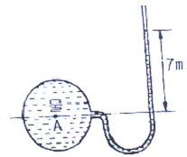
- 700Pa
- 7kPa
- 70kPa
- 700kPa
(정답률: 63%)
80. 냉동기의 압축기에서 토출된 고온, 고압의 냉매 증기는 응축기에서 방열하고 액화된다. 이때 방열 되는 응축열로 물이나 공기를 가열하여 난방에 이용하는 장치는?
- 열펌프
- 냉각탑
- 전열교환기
- 공기조화기
(정답률: 49%)
5과목: 건축관계법규
81. 비상용승강기 설치 대상 건축물에서 비상용승강기의 승강장의 바닥면적은 비상용승강기 1대에 대하여 최소 얼마 이상으로 하여야 하는가?(단, 옥내에 승강장을 설치하는 경우)
- 5m2
- 6m2
- 7m2
- 8m2
(정답률: 72%)
82. 다음 중 건축기준의 허용오차 범위(%)가 가장 큰 항목은?
- 건폐율
- 용적률
- 평면길이
- 건축선의 후퇴거리
(정답률: 64%)
83. 주차장법령상 다음과 같이 정의되는 용어는?
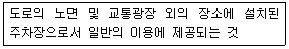
- 노상주차장
- 노외주차장
- 부설주차장
- 기계식주차장
(정답률: 75%)
84. 다음은 거실의 반자높이에 관한 기준 내용이다. ( )안에 속하지 않는 것은?
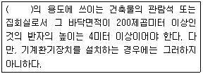
- 종교시설
- 장례식장
- 문화 및 집회시설 중 전시장
- 문화 및 집회시설 중 관람장
(정답률: 52%)
85. 건축신고를 한 건축물을 철거하고자 하는 자는 철거 예정일 며칠 전까지 건축물철거·멸실신고서를 제출하여야 하는가?(2016년 01월 13일 개정된 규정 적용됨)
- 3일 전
- 7일 전
- 15일 전
- 30일 전
(정답률: 52%)
86. 국토의 계획 및 이용에 관한 법령에 따른 상업 지역의 세분에 속하지 않는 것은?
- 일반상업지역
- 전용상업지역
- 유통상업지역
- 근린상업지역
(정답률: 60%)
87. 부설주차장의 설치의무를 면제받을 수 있는 최대 주차대수는? (단, 「도로교통법」 에 따라 차량통행이 금지된 장소가 아닌 경우)
- 100대
- 200대
- 300대
- 400대
(정답률: 64%)
88. 건축법령에 따른 건축물의 면적, 높이 및 층수 산정의 기본 원칙으로 옳지 않은 것은?
- 건축면적은 건축선으로 둘러싸인 부분의 수평 투영면적으로 한다.
- 충고는 방의 바닥구조체 윗면으로부터 위층 바닥구조체의 윗면까지의 높이로 한다.
- 처마높이는 지표면으로부터 건축물의 지붕틀 또는 이와 비슷한 수평재를 지지하는 벽,깔도리 또는 기둥의 상단까지의 높이로 한다.
- 바닥면적은 건축물의 각 층 또는 그 일부로서 벽, 기둥, 그 밖에 이와 비슷한 구획의 중심선으로 둘러싸인 부분의 수평투영면적으로 한다.
(정답률: 40%)
89. 다음 중 6층 이상의 거실면적의 합계가 3000인 경우, 설치하여야 하는 승용승강기의 최소 대수가 다른 것은? (단, 8인승 승용승강기의 경우)
- 업무시설
- 의료시설
- 숙박시설
- 교육연구시설
(정답률: 57%)
90. 공통주택과 오피스텔의 난방설비를 개별난방방식으로 하는 경우에 관한 기준 내용으로 옳은 것은?
- 보일러의 연도는 내화구조로서 공동연도로 설치 할 것
- 보일러실의 윗부분에서는 그 면적이 1m2이상인 환기창을 설치할 것
- 기름보일러를 설치하는 경우에는 기름저장소를 보일러실에 설치할 것
- 공동주택의 경우에는 난방구획마다 내화구조로 된 벽, 바닥과 갑종방화문으로 된 출입문으로 구획할 것
(정답률: 49%)
91. 다음 중 용도변경과 관련된 시설군과 해당 시설군에 속하는 건축물의 용도의 연결이 옳지 않은 것은?
- 산업 등 시설군 - 운수시설
- 전기통신시설군 - 발전시설
- 문화집회시설군 - 판매시설
- 교육 및 복지시설군 – 의료시설
(정답률: 68%)
92. 다음 중 노외주차장에 설치하여야 하는 차로의 최소 너비가 가장 작은 주차형식은? (단, 이륜자동차전용 외의 노외주차장으로 출입구가 2개 이상인 경우)
- 직각주차
- 교차주자
- 평행주차
- 60도 대향주차
(정답률: 68%)
93. 다음 중 건축법에 적용을 받는 건축물에 속하는 것은?
- 실내낚시터
- 고속도로 통행료 징수시설
- 철도의 선로 부지에 있는 플랫폼
- 「문화재보호법」에 따른 가지정 문화재
(정답률: 67%)
94. 다음은 건축신고와 관련된 기준 내용이다. ( )안에 알맞은 것은?(오류 신고가 접수된 문제입니다. 반드시 정답과 해설을 확인하시기 바랍니다.)
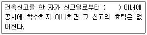
- 30일
- 6월
- 1년
- 3년
(정답률: 57%)
95. 피난안전구역의 설치에 관한 기준 내용으로 옳지 않은 것은?
- 피난안전구역의 높이는 2.1m 이상일 것
- 비상용 승강기는 피난안전구역에서 승하차 할 수 있는 구조로 설치할 것
- 건축물의 내부에서 피난안전구역으로 통하는 계단은 피난계단의 구조로 설치할 것
- 관리사무소 또는 방재센터 등과 긴급연락이 가능한 경보 및 통신시설을 설치할 것
(정답률: 72%)
96. 막다른 도로의 길이가 10m인 경우, 이 도로가 건축법상 도로이기 위한 최소 너비는?
- 1.5m
- 2m
- 3m
- 6m
(정답률: 51%)
97. 같은 건축물안에 공동주택과 위탁시설을 함께 설치하고자 하는 경우에 관한 기준 내용으로 옳지 않은 것은?
- 건축물의 주요 구조부를 방화구조로 할 것
- 공동주택과 위락시설을 서로 이웃하지 아니 하도록 배치할 것
- 공동주택과 위락 시설은 내화구조로 된 바닥 및 벽으로 구획하여 서로 차단할 것
- 공동주택의 출입구와 위락시설의 출입구는 서로 그 보행거리가 30m 이상이 되도록 설치할 것
(정답률: 48%)
98. 다음과 같은 경우 지정하여야 하는 공사감리자는?
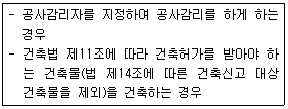
- 건축사
- 공사시공자
- 건축시공기술사
- 건설기술용역업자
(정답률: 67%)
99. 제1종 일반주거지역안에서 건축할 수 없는 건축물은?
- 종교시설
- 노유자시설
- 제1종 근린생활시설
- 공동주택 중 아파트
(정답률: 76%)
100. 다음은 건축선에 따른 건축제한과 관련된 기준 내용이다. ( )안에 알맞은 것은?
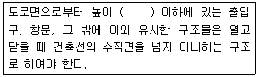
- 3m
- 3.5m
- 4m
- 4.5
(정답률: 61%)